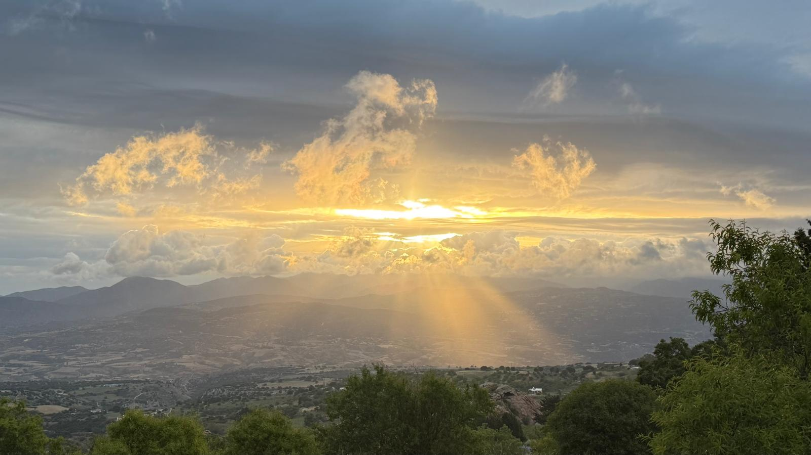
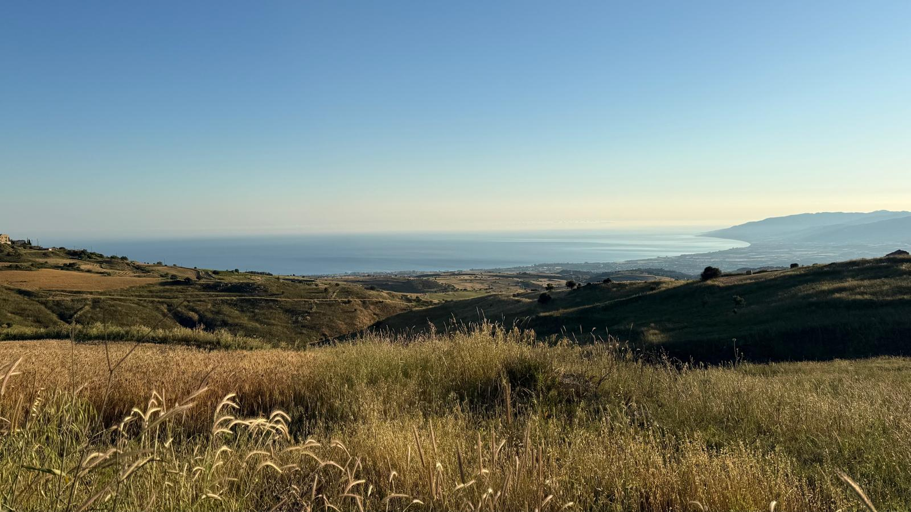
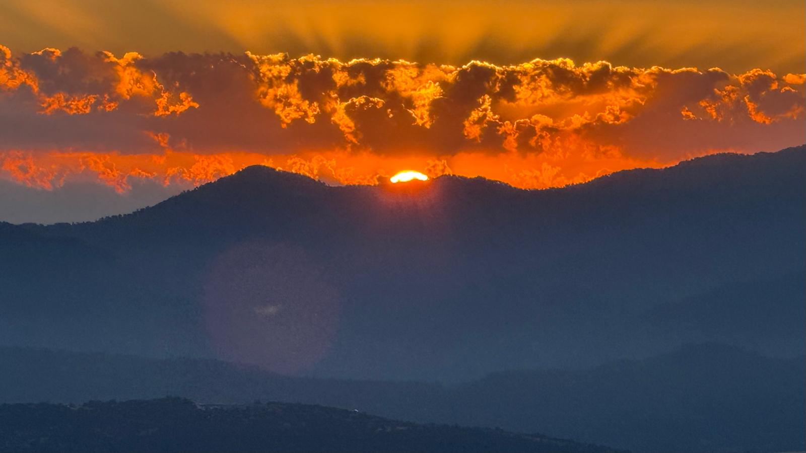
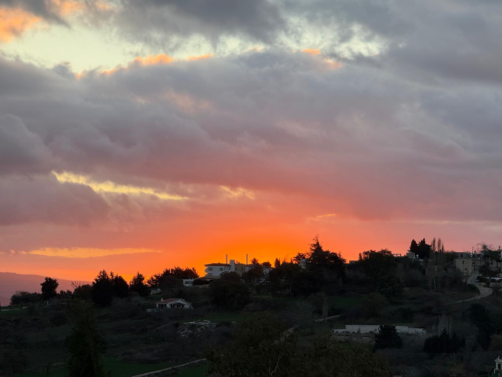
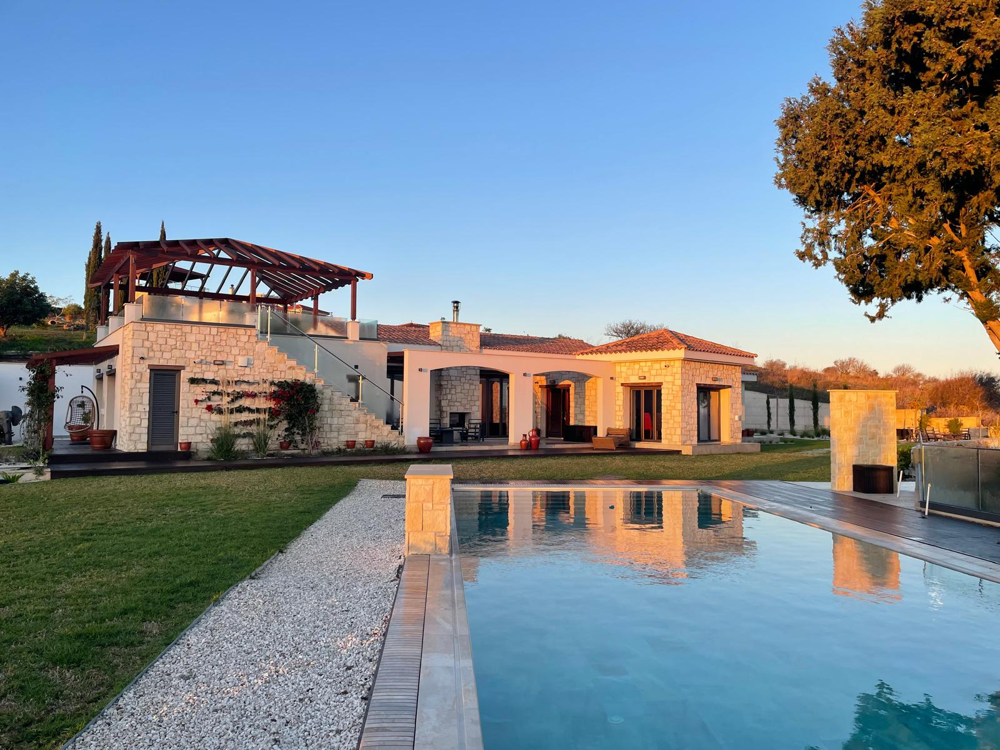
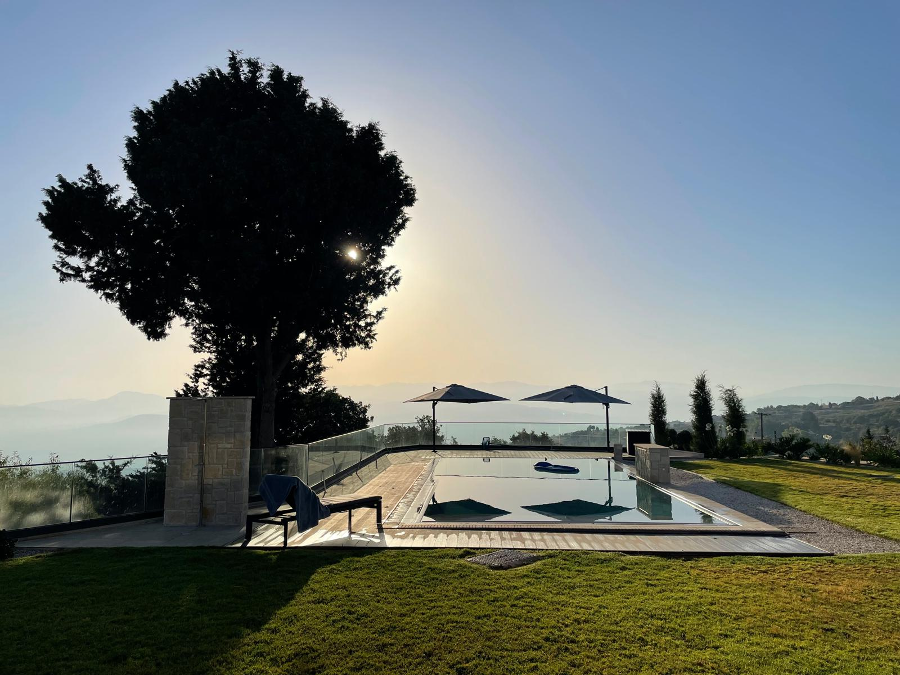
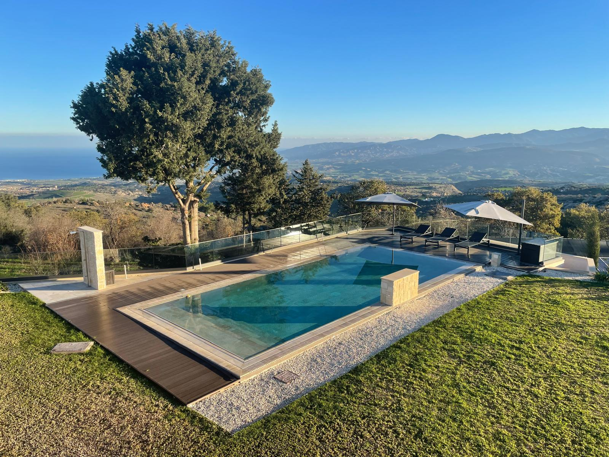
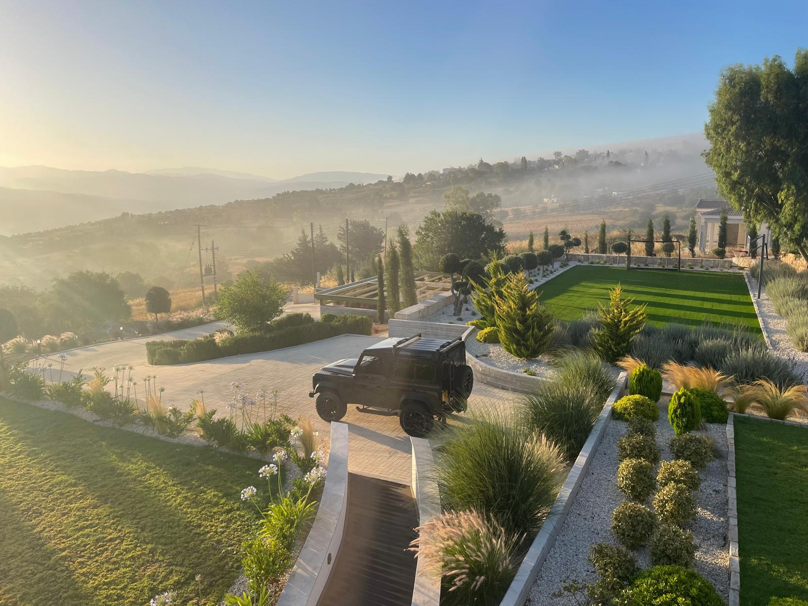
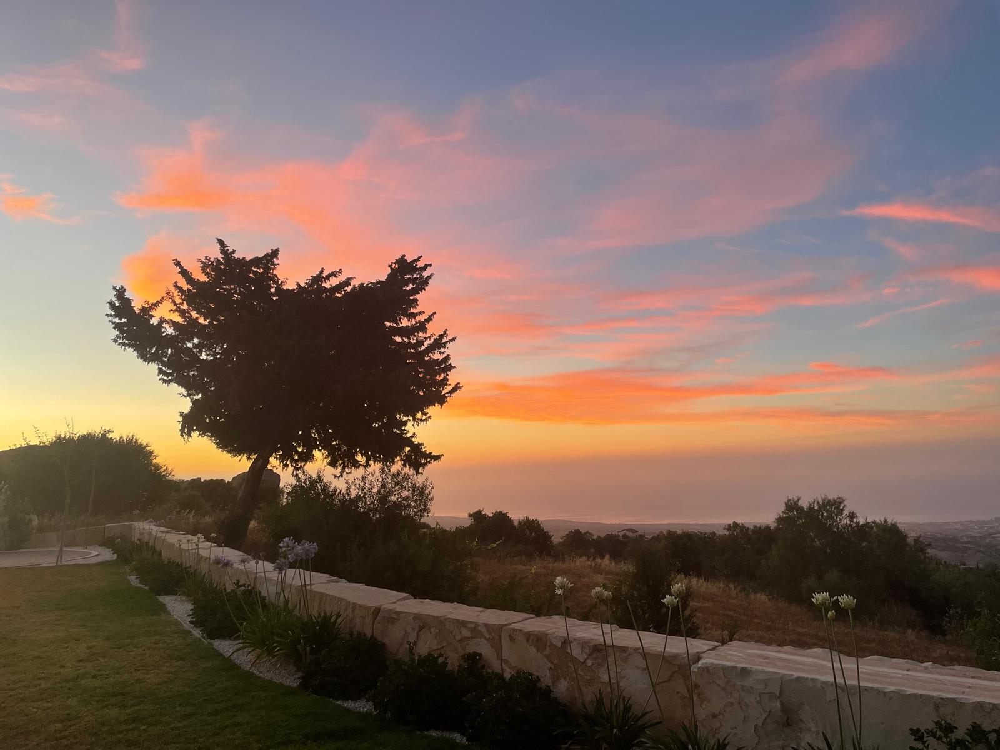

Some places are visited.
Others quietly become part of who we are.
Tapestry House was never imagined as another luxury villa. It was imagined as a place where mornings last longer, conversations become traditions, and every guest leaves carrying something invisible.

The first light arrives without announcement. Mountains emerge from darkness, mist lifts from the valleys, and the Mediterranean begins another quiet morning.
Perched above the Akamas Peninsula, Drouseia occupies one of Cyprus' most extraordinary landscapes. High enough to embrace cool mountain air, close enough to hear the sea. Luxury begins with location. Everything else follows naturally.


Clouds shift. Colours evolve. No morning is ever repeated. Nature quietly reminds us that beauty was never meant to be rushed.

The finest memories rarely happen during grand occasions. They appear over breakfast that becomes lunch. Conversations that outlast sunset. Shared bottles. Open windows. Slow afternoons. This is what Tapestry House was designed to protect.



Nothing asks for your attention. The day unfolds naturally. Swim. Read. Talk. Rest. Repeat.

Spring colours the hills. Summer belongs to the sea. Autumn softens the light. Winter returns silence to the village. No season replaces another. Each simply tells a different chapter.
